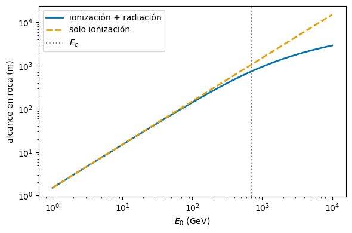
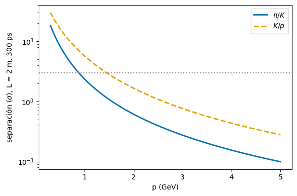
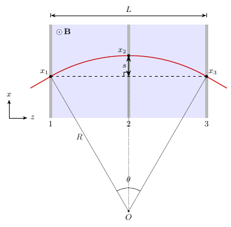

Partículas — boletín III#
Interacción con la materia, detectores y del dato al resultado#
Jose A. Hernando
Departamento de Física de Partículas. Universidade de Santiago de Compostela
Curso 2026/27
# Configuración e imports
%matplotlib inline
import numpy as np
import matplotlib.pyplot as plt
from scipy import stats
# Paleta Okabe-Ito (apta para daltónicos)
C_SIG, C_BKG = '#0072B2', '#E69F00'
Contenido#
Soluciones del boletín III del curso 2026/27, con la misma numeración que el boletín en pdf. Los ejercicios recorren la parte experimental del capítulo de perspectivas:
Interacción con la materia. 1 — La sección eficaz \(\pi^+ + p\). 2 — Muones en la roca.
Detectores. 3 — Tiempo de vuelo. 4 — La sagitta.
Del dato al resultado. 5 — Eficiencia de un trigger de dos muones. 6 — Neutrinos de reactor: Poisson y Bayes. 7 — La sección eficaz \(e^+ + e \to \pi^+ + \pi^-\).
Aceleradores. 8 — La luminosidad de un colisionador.
Notación. Unidades naturales, \(\hbar = c = 1\), salvo que se indique lo contrario. \(1\) mb \(= 10^{-27}\) cm\(^2\), \(1\) nb \(= 10^{-33}\) cm\(^2\), \(1\) GeV\(^{-2} = 3.8938\cdot10^{5}\) nb. \(N_A = 6.022\cdot10^{23}\) mol\(^{-1}\), \(m_{\pi^\pm} = 139.57\) MeV, \(m_K = 493.7\) MeV.
[>] Ejercicio 1 — La sección eficaz $\pi^+ + p$
Para medir la sección eficaz de la interacción \(\pi^+ + p\) enviamos un haz de \(\pi^+\) de \(20\) GeV de energía a un tanque de longitud \(L = 1\) m, que en una primera configuración está vacío y luego lleno de hidrógeno líquido, y medimos los flujos tras el tanque normalizados al mismo flujo incidente y obtenemos \(N_0 = 7.5\cdot10^5\) y \(N_H = 6.9\cdot10^5\). Calcula la sección eficaz y su error estadístico.
Datos: \(\rho_H = 60\) kg/m\(^3\).
NA = 6.022e23
N0, NH, L = 7.5e5, 6.9e5, 100.0 # cm
n = 0.060 * NA / 1.0 # protones/cm^3 (rho = 0.060 g/cm^3, A = 1 g/mol)
sigma = -np.log(NH / N0) / (n * L)
dsigma = np.sqrt(1 / NH + 1 / N0) / (n * L)
print('n = {:.2e} cm^-3'.format(n))
print('fracción que interacciona = {:.1%}'.format(1 - NH / N0))
print('sigma = ({:.1f} +- {:.1f}) mb'.format(sigma / 1e-27, dsigma / 1e-27))
n = 3.61e+22 cm^-3
fracción que interacciona = 8.0%
sigma = (23.1 +- 0.5) mb
Solución
La fracción del haz que atraviesa el blanco sin interaccionar es
con \(n\) la densidad de protones del blanco. Con \(\rho_H = 60\) kg/m\(^3\) \(= 0.060\) g/cm\(^3\) y \(A_H \simeq 1\) g/mol, \(n = \rho_H N_A/A_H = 3.61\cdot10^{22}\) cm\(^{-3}\), y con \(L = 100\) cm:
Error estadístico. \(N_0\) y \(N_H\) son de Poisson, \(\delta N = \sqrt N\). Como \(\sigma = (\ln N_0 - \ln N_H)/(nL)\),
Solo interacciona un \(8\,\%\) del haz: el blanco es «delgado», y el error lo dominan las fluctuaciones de dos números grandes casi iguales. El valor es el de la sección eficaz total \(\pi^+ + p\) a esa energía. (La densidad real del hidrógeno líquido es \(71\) kg/m\(^3\); con ella saldría \(19.6\) mb.)
[>] Ejercicio 2 — Muones en la roca
Los muones de alta energía pierden energía atravesando la materia según
donde \(a \simeq 2.5\) MeV cm\(^2\)/g está asociado a la pérdida por ionización y \(b \simeq 3.5\cdot10^{-6}\) cm\(^2\)/g a la radiación de frenado para roca. Considerar \(A = 22\), \(Z = 11\) y \(\rho = 2.65\) g/cm\(^3\).
(a) ¿A qué energía la pérdida de energía por ionización es igual a la pérdida por bremsstrahlung? (b) ¿Cuánta distancia recorre en promedio un muón cósmico de \(100\) GeV en roca?
a, b, rho = 2.5, 3.5e-6, 2.65 # MeV cm^2/g, cm^2/g, g/cm^3
E0 = 1e5 # MeV
Ec = a / b
X = np.log(1 + b * E0 / a) / b # g/cm^2
print('E_c = {:.0f} GeV'.format(Ec / 1e3))
print('X = {:.2e} g/cm^2 -> R = {:.0f} m (solo ionización: {:.0f} m)'.format(X, X / rho / 100, E0 / a / rho / 100))
# alcance en función de la energía inicial
E = np.logspace(3, 7, 200) # MeV
fig, ax = plt.subplots(figsize=(6, 4))
ax.loglog(E / 1e3, np.log(1 + b * E / a) / b / rho / 100, color=C_SIG, lw=2, label='ionización + radiación')
ax.loglog(E / 1e3, E / a / rho / 100, color=C_BKG, ls='--', lw=2, label='solo ionización')
ax.axvline(Ec / 1e3, color='gray', ls=':', label='$E_c$')
ax.set_xlabel('$E_0$ (GeV)'); ax.set_ylabel('alcance en roca (m)'); ax.legend(); plt.tight_layout()
E_c = 714 GeV
X = 3.74e+04 g/cm^2 -> R = 141 m (solo ionización: 151 m)

Solución
(a) La ionización es \(\propto a\) y la radiación \(\propto bE\); se igualan en la energía crítica
Por debajo domina la ionización; por encima, la pérdida radiativa. Es mucho mayor que la del electrón (\(E_c \simeq 610\ \text{MeV}/(Z+1.24) \simeq 50\) MeV en roca) porque la radiación va como \(1/m^2\).
(b) Con \(\mathrm{d}E/\mathrm{d}x = -\rho(a + bE)\), separando variables e integrando hasta \(E \simeq 0\):
Con \(E_0 = 10^5\) MeV, \(bE_0 = 0.35\) MeV cm\(^2\)/g y \(X \simeq 3.74\cdot10^{4}\) g/cm\(^2\), luego \(R = X/\rho \simeq 1.41\cdot10^{4}\) cm \(\simeq 141\) m. Solo con ionización serían \(E_0/(\rho a) \simeq 151\) m: a \(100\) GeV la radiación apenas cuenta. Por eso los laboratorios subterráneos se miden en «metros equivalentes de agua» y necesitan cientos de metros de roca para frenar los muones cósmicos.
[>] Ejercicio 3 — Tiempo de vuelo
Un sistema de tiempo de vuelo (TOF) consta de dos centelleadores separados una distancia \(L\), que las partículas atraviesan perpendicularmente; para cada partícula se mide el tiempo que tarda en ir del primero al segundo.
(a) Considera dos partículas de masas \(m_1\), \(m_2\) con el mismo momento \(p\): ¿cuál es la diferencia entre sus tiempos de vuelo? (b) Si la resolución temporal de cada centelleador es de \(300\) ps, ¿a qué distancia deben estar situados para separar \(\pi\) de \(K\) de \(4\) GeV de momento a \(3\) desviaciones estándar? (c) En un colisionador como el LHC, el instante de producción \(t_0\) se conoce con precisión a partir del cruce de los haces y del vértice de la colisión, y basta entonces con un único centelleador situado a una distancia \(L\) del punto de interacción. ¿A qué distancia debería estar para la misma separación? Supón despreciable la incertidumbre en \(t_0\).
c_m_ps = 3.0e8 * 1e-12 # m/ps
m_pi, m_K, p = 0.13957, 0.4937, 4.0 # GeV
beta = lambda m, p: p / np.sqrt(p**2 + m**2)
dt_L = (1 / beta(m_K, p) - 1 / beta(m_pi, p)) / c_m_ps # ps/m
print('Delta t / L = {:.1f} ps/m'.format(dt_L))
for nombre, sig_t in (('dos centelleadores', np.hypot(300, 300)), ('un centelleador + t0', 300.0)):
print('{:22s}: sigma = {:.0f} ps -> L = {:.0f} m'.format(nombre, sig_t, 3 * sig_t / dt_L))
# separación en sigmas para L = 2 m (un TOF real) en función del momento
pp = np.linspace(0.3, 5, 200)
fig, ax = plt.subplots(figsize=(6, 4))
for (m1, m2, lab, col, ls) in ((m_pi, m_K, r'$\pi/K$', C_SIG, '-'), (m_K, 0.93827, r'$K/p$', C_BKG, '--')):
ax.plot(pp, (1 / beta(m2, pp) - 1 / beta(m1, pp)) * 2.0 / c_m_ps / 300, color=col, ls=ls, lw=2, label=lab)
ax.axhline(3, color='gray', ls=':')
ax.set_yscale('log'); ax.set_xlabel('p (GeV)'); ax.set_ylabel(r'separación ($\sigma$), L = 2 m, 300 ps')
ax.legend(); plt.tight_layout()
Delta t / L = 23.3 ps/m
dos centelleadores : sigma = 424 ps -> L = 55 m
un centelleador + t0 : sigma = 300 ps -> L = 39 m

Solución
(a) \(\beta = p/E = p/\sqrt{p^2 + m^2}\) y \(t = L/(\beta c)\):
(b) A \(4\) GeV, \(\beta_\pi = 0.99939\) y \(\beta_K = 0.99245\): \(\Delta t/L \simeq 23.3\) ps/m. El tiempo de vuelo es la diferencia de dos medidas independientes, \(\sigma_{\Delta t} = \sqrt2\cdot300 = 424\) ps; a \(3\sigma\) hacen falta \(1.27\) ns, es decir, \(L \simeq 55\) m. Impracticable: a varios GeV el TOF no separa \(\pi\) de \(K\), y se usa el Cherenkov.
(c) Con \(t_0\) externo, \(\sigma = 300\) ps, \(3\sigma = 0.90\) ns y \(L \simeq 39\) m: un factor \(\sqrt2\) menos. Es la idea de los detectores de tiempo de los experimentos del LHC: el \(t_0\) del suceso sustituye al primer centelleador. La figura muestra que con \(L = 2\) m el TOF separa a \(3\sigma\) \(\pi/K\) hasta \(\sim 0.9\) GeV y \(K/p\) hasta \(\sim 1.5\) GeV: como \(\Delta t \propto 1/p^2\), es una técnica de bajo momento.
[>] Ejercicio 4 — La sagitta
Considera un espectrómetro de longitud \(L\) y campo magnético \(B\) y tres cámaras de detección situadas antes, en el medio y después del espectrómetro, que nos permiten estimar la sagitta
Calcula el momento transverso de la partícula y su incertidumbre si la resolución de cada cámara es \(\sigma_x\). Considerar \(\theta\) pequeño (ver la figura).


def sagitta(pT, B, L):
# s = L^2/(8R), con R = pT/(0.3 B) [GeV, T, m]
return L**2 * 0.3 * B / (8 * pT)
B, L, sx = 1.0, 1.0, 100e-6 # T, m, m
for pT in (1, 10, 100):
s = sagitta(pT, B, L)
print('pT = {:5.0f} GeV: R = {:6.1f} m, s = {:7.3f} mm, sigma_pT/pT = {:5.1%}'.format(
pT, pT / (0.3 * B), 1e3 * s, np.sqrt(1.5) * sx / s))
pT = 1 GeV: R = 3.3 m, s = 37.500 mm, sigma_pT/pT = 0.3%
pT = 10 GeV: R = 33.3 m, s = 3.750 mm, sigma_pT/pT = 3.3%
pT = 100 GeV: R = 333.3 m, s = 0.375 mm, sigma_pT/pT = 32.7%
Solución
Momento y radio. El campo no hace trabajo: \(|\vec p|\) y \(\gamma\) son constantes y en el plano perpendicular a \(\vec B\) la trayectoria es una circunferencia. Igualando \(p_T v_T/R = q v_T B\), \(p_T = qBR\), válido relativísticamente. En unidades prácticas,
Sagitta y radio. En el caso simétrico, Pitágoras en el triángulo centro–punto medio de la cuerda–extremo da \((R-s)^2 + (L/2)^2 = R^2\), y con \(s \ll R\), \(s \simeq L^2/(8R)\). En general la traza entra inclinada; para ángulos pequeños el arco es una parábola, \(x(z) \simeq K - (z - z_c)^2/(2R)\), y evaluando en \(z = 0, L/2, L\) los términos en \(z_c\) se cancelan: \(s = L^2/(8R)\) con cualquier inclinación (una inclinación suma un término lineal, que desplaza igual el arco y la cuerda). Por tanto
Incertidumbre. Como \(p_T \propto 1/s\), \(\sigma_{p_T}/p_T = \sigma_s/s\). Con tres medidas independientes, \(\sigma_s^2 = \sigma_x^2 + 2(\sigma_x/2)^2 = \tfrac32\sigma_x^2\), y
La resolución relativa empeora linealmente con \(p_T\): cuanto más rígida la traza, menor la sagitta. Y mejora como \(BL^2\): es más rentable alargar el espectrómetro que aumentar el campo. Con \(B = 1\) T, \(L = 1\) m y \(\sigma_x = 100\ \mu\)m, un muón de \(10\) GeV tiene \(s \simeq 3.8\) mm y \(\sigma_{p_T}/p_T \simeq 3\,\%\); a \(100\) GeV, un \(30\,\%\).
[>] Ejercicio 5 — Eficiencia de un trigger de dos muones
El sistema de disparo de un experimento selecciona un muón con un momento transverso bajo \(p_T > 4\) GeV (LPT) u otro de alto momento con \(p_T > 20\) GeV (HPT). La eficiencia para un muón de la desintegración \(Z^0 \to \mu^+ + \mu\) es de \(89\,\%\) y \(62\,\%\) para LPT y HPT respectivamente. ¿Cuál sería la eficiencia para un disparo basado en los dos muones del \(Z^0\) con las siguientes configuraciones?
(a) LPT1 y LPT2. (b) HPT1 o HPT2.
# eficiencias por suceso con dos muones independientes
e_lpt, e_hpt = 0.89, 0.62
print('(a) LPT1 y LPT2: {:.1%}'.format(e_lpt**2))
print('(b) HPT1 o HPT2: {:.1%}'.format(1 - (1 - e_hpt)**2))
(a) LPT1 y LPT2: 79.2%
(b) HPT1 o HPT2: 85.6%
Solución
Suponemos que las eficiencias de los dos muones son independientes.
(a) «Y»: los dos muones tienen que pasar el corte LPT, \(\varepsilon = \varepsilon^2_{LPT} = 0.89^2 \simeq 79\,\%\).
(b) «O»: basta con uno. Es más sencillo calcular el complementario, que no pase ninguno: \(\varepsilon = 1 - (1 - \varepsilon_{HPT})^2 = 1 - 0.38^2 \simeq 86\,\%\).
Pedir los dos muones cuesta eficiencia; aceptar cualquiera de los dos la recupera, aunque el corte por muón sea más duro. La independencia es una hipótesis: los dos muones salen de la misma desintegración, y si, por ejemplo, el \(Z^0\) se produce con poco momento transverso, los dos tienen un \(p_T\) parecido y pasan o fallan el corte a la vez.
[>] Ejercicio 6 — Neutrinos de reactor: Poisson y Bayes
Un experimento de neutrinos opera cerca de una central nuclear. La estimación del experimento es que interaccionan \(1.2\) neutrinos al día provenientes de la central y que la eficiencia de detección es del \(62\,\%\).
Primero operaron el detector mientras la central permaneció parada durante \(50\) días y observaron \(3\) sucesos similares a los esperados.
(a) ¿Qué probabilidad hay de que cuando la central entre en funcionamiento observe al menos \(1\) suceso el primer día? (b) Si se observa un suceso, ¿cuál es la probabilidad de que sea espurio?
lam_S = 1.2 * 0.62 # sucesos/día de la central
lam_B = 3 / 50 # sucesos/día de fondo
lam = lam_S + lam_B
print('lambda_S = {:.3f}, lambda_B = {:.3f}, lambda = {:.3f} por día'.format(lam_S, lam_B, lam))
print('(a) P(N >= 1) = {:.1%}'.format(1 - stats.poisson.pmf(0, lam)))
# (b) Bayes: P(fondo | N=1) = P(N=1 | fondo) P(fondo) / P(N=1)
p1 = stats.poisson.pmf(1, lam)
pB1 = stats.poisson.pmf(1, lam_B) * stats.poisson.pmf(0, lam_S) / p1
print('(b) P(espurio | N = 1) = {:.1%} (= lambda_B/lambda = {:.1%})'.format(pB1, lam_B / lam))
# el fondo se conoce solo con 3 sucesos: lambda_B = (3 +- sqrt(3))/50
for lb in ((3 - np.sqrt(3)) / 50, (3 + np.sqrt(3)) / 50):
print(' lambda_B = {:.3f}: {:.1%}'.format(lb, lb / (lam_S + lb)))
lambda_S = 0.744, lambda_B = 0.060, lambda = 0.804 por día
(a) P(N >= 1) = 55.2%
(b) P(espurio | N = 1) = 7.5% (= lambda_B/lambda = 7.5%)
lambda_B = 0.025: 3.3%
lambda_B = 0.095: 11.3%
Solución
Los sucesos de la central y los de fondo son de Poisson, con \(\lambda_S = 1.2 \cdot 0.62 = 0.744\) y \(\lambda_B = 3/50 = 0.060\) sucesos al día; los \(3\) sucesos con la central parada miden el fondo.
(a) Con la central en marcha, \(\lambda = \lambda_S + \lambda_B = 0.804\), y
(b) Entendemos que el primer día se observa exactamente un suceso, \(N = 1\), y queremos la probabilidad de que sea de fondo (y ninguno de la central). Por el teorema de Bayes, \(P(A\,|\,B)\,P(B) = P(B\,|\,A)\,P(A)\):
\(P(\text{fondo}) = P(N_B = 1)\,P(N_S = 0)\) porque fondo y señal son independientes, y \(P(N=1)\) es Poisson de media \(\lambda\) (la suma de dos Poisson es Poisson). Las exponenciales se cancelan: con un solo suceso, la probabilidad de que venga de cada fuente es proporcional a su tasa. El fondo es \(12\) veces menos frecuente que la señal, y solo \(1\) de cada \(\sim 13\) sucesos aislados es espurio.
El resultado supone que el fondo medido con la central parada es el mismo con la central en marcha, y está mal conocido: con \(3\) sucesos, \(\lambda_B = (0.060 \pm 0.035)\) por día, y la probabilidad de (b) está entre un \(3\) y un \(11\,\%\).
[>] Ejercicio 7 — La sección eficaz $e^+ + e \to \pi^+ + \pi^-$
Estima la sección eficaz (y sus errores estadísticos y sistemáticos) de \(e^+ + e \to \pi^+ + \pi^-\) a \(\sqrt{s} = 1\) GeV con los datos que obtuvo el siguiente experimento: con una luminosidad integrada de \(\mathcal{L}_{int} = 2.43\) nb\(^{-1}\) se observaron \(128\) sucesos candidatos, la eficiencia de selección se estimó en \(\varepsilon = (52 \pm 0.2)\,\%\) y el fondo de contaminación en \(N_B = 14 \pm 1.8\) sucesos.
La sección eficaz se espera teóricamente que sea
donde \(\beta_\pi\) es la velocidad del pión en unidades de \(c\), \(\alpha\) la constante de estructura fina y \(F(s)\) un factor teórico. ¿Puedes estimar el valor y la incertidumbre de \(|F(s)|\) a partir de las medidas del experimento?
Lint, Nobs, NB, dNB, eps, deps = 2.43, 128, 14, 1.8, 0.52, 0.002 # nb^-1, sucesos, -, -
sig = (Nobs - NB) / (Lint * eps)
dst = np.sqrt(Nobs) / (Lint * eps)
dsy = np.hypot(dNB / (Lint * eps), sig * deps / eps)
print('sigma = ({:.1f} +- {:.1f} stat +- {:.1f} sist) nb'.format(sig, dst, dsy))
s, alpha, GeV2nb = 1.0, 1 / 137.036, 3.8938e5 # GeV^2, -, nb GeV^2
b_pi = np.sqrt(1 - 4 * 0.13957**2 / s)
for nombre, k in (('pi alpha^2/s (enunciado)', 1), ('pi alpha^2/(3s) (correcta) ', 3)):
F = np.sqrt(k * sig / GeV2nb * s / (np.pi * alpha**2 * b_pi**3))
print('{}: |F| = {:.2f} +- {:.2f} stat +- {:.3f} sist, |F|^2 = {:.1f}'.format(
nombre, F, F * dst / sig / 2, F * dsy / sig / 2, F**2))
print('beta_pi = {:.4f}'.format(b_pi))
sigma = (90.2 +- 9.0 stat +- 1.5 sist) nb
pi alpha^2/s (enunciado): |F| = 1.25 +- 0.06 stat +- 0.010 sist, |F|^2 = 1.6
pi alpha^2/(3s) (correcta) : |F| = 2.17 +- 0.11 stat +- 0.018 sist, |F|^2 = 4.7
beta_pi = 0.9603
Solución
Sección eficaz. \(N_S = N_{obs} - N_B = 114\) y \(N_S = \sigma\,\mathcal{L}_{int}\,\varepsilon\), luego \(\sigma = 114/(2.43 \cdot 0.52) = 90.2\) nb.
Estadístico: Poisson del número observado, \(\delta\sigma_{stat} = \sqrt{128}/(\mathcal{L}_{int}\varepsilon) = 9.0\) nb.
Sistemático: del fondo, \(1.8/(\mathcal{L}_{int}\varepsilon) = 1.42\) nb; de la eficiencia, \(\sigma\,\delta\varepsilon/\varepsilon = 90.2 \cdot 0.2/52 = 0.35\) nb; en cuadratura, \(1.5\) nb.
Domina el error estadístico: con \(128\) sucesos, un \(9\,\%\) relativo (\(\sqrt{128}/114\), porque el fondo también fluctúa).
Factor de forma. En un colisionador simétrico el centro de masas es el laboratorio y cada pión lleva \(E_\pi = \sqrt s/2\), así que \(\beta_\pi = \sqrt{1 - 4m_\pi^2/s} = 0.960\). El factor \(\beta_\pi^3\) tiene dos orígenes: un \(\beta_\pi\) del espacio fásico y \(\beta_\pi^2\) de que dos piones sin espín producidos por un fotón virtual (espín 1) salen en onda P (\(L = 1\)). Despejando, con \(1\) GeV\(^{-2} = 3.8938\cdot10^5\) nb y \(\alpha = 1/137.036\),
Como \(|F| \propto \sqrt\sigma\), \(\delta F/F = \tfrac12\,\delta\sigma/\sigma\):
Errata: falta un 1/3 en la fórmula
La sección eficaz de \(e^+ + e \to \pi^+ + \pi^-\) es
La onda P da \(\mathrm{d}\sigma/\mathrm{d}\Omega \propto \sin^2\theta\), y al integrar aparece el \(1/3\) frente a \(\sigma(e^+ + e \to \mu^+ + \mu) = 4\pi\alpha^2/(3s)\), que va como \(1 + \cos^2\theta\). Con la fórmula correcta, \(|F| = \sqrt{3}\cdot1.25 \simeq 2.17 \pm 0.11_{stat} \pm 0.02_{sist}\) y \(|F|^2 \simeq 4.7\). \(F\) es el factor de forma del pión: un pión puntual tendría \(|F| = 1\), y \(|F|^2 \simeq 4.7\) refleja su estructura, la cola de la resonancia \(\rho\) (\(m_\rho = 775\) MeV), que domina la producción de dos piones a estas energías.
Una eficiencia conocida al \(0.2\,\%\) absoluto (\(0.4\,\%\) relativo) es muy optimista; un \(\pm 2\,\%\) sería más realista, y el sistemático subiría a \(3.8\) nb, aún por debajo del estadístico.
[>] Ejercicio 8 — La luminosidad de un colisionador
Sea un colisionador donde \(n\) paquetes que contienen \(N\) partículas recorren un anillo con una frecuencia \(\nu\) en los dos sentidos. Al colisionar se reducen los paquetes a una sección transversal de radio \(\sigma\). ¿Cuál es la luminosidad del colisionador?
# Ejemplo numérico: LHC con los parámetros de diseño
n, N, nu, sig = 2808, 1.15e11, 11.245e3, 16.7e-4 # paquetes, protones/paquete, Hz, cm
L_unif = n * N**2 * nu / (np.pi * sig**2)
L_gauss = n * N**2 * nu / (4 * np.pi * sig**2)
print('L (disco uniforme) = {:.1e} cm^-2 s^-1'.format(L_unif))
print('L (gaussiana) = {:.1e} cm^-2 s^-1'.format(L_gauss))
L (disco uniforme) = 4.8e+34 cm^-2 s^-1
L (gaussiana) = 1.2e+34 cm^-2 s^-1
Solución
\(\mathcal{L}\) se define de forma que la tasa de un proceso de sección eficaz \(\sigma_{int}\) sea \(R = \sigma_{int}\mathcal{L}\).
Un cruce. Las \(N\) partículas de un paquete se reparten uniformemente sobre el área \(A = \pi\sigma^2\); una partícula del otro paquete interacciona con probabilidad \(N\sigma_{int}/A\) (la fracción del área cubierta por los \(N\) «discos» \(\sigma_{int}\)). Con \(N\) partículas en el paquete que llega, \(N_{int} = N^2\sigma_{int}/A\).
Cruces por segundo. Cada paquete pasa \(\nu\) veces por segundo por el punto de interacción; con \(n\) paquetes por haz, hay \(n\nu\) cruces por segundo.
En los aceleradores reales la distribución transversal es gaussiana, de anchura \(\sigma\) en \(x\) e \(y\), y el área efectiva es la integral de solapamiento, \(1/A = \int\rho_1\rho_2\,\mathrm{d}x\,\mathrm{d}y = 1/(4\pi\sigma^2)\): \(\mathcal{L} = nN^2\nu/(4\pi\sigma^2)\), la fórmula habitual. En los dos casos \(\mathcal{L} \propto nN^2\nu/\sigma^2\): \(N^2\) porque interaccionan dos poblaciones, \(1/\sigma^2\) porque apretar los haces concentra los blancos. En el LHC (\(n = 2808\), \(N = 1.15\cdot10^{11}\), \(\nu = 11.2\) kHz, \(\sigma = 16.7\ \mu\)m) la fórmula gaussiana da \(\simeq 1.2\cdot10^{34}\) cm\(^{-2}\)s\(^{-1}\), la luminosidad de diseño.